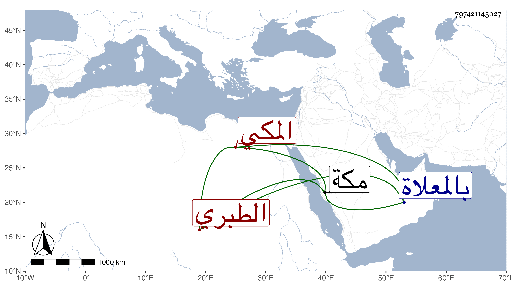

0902Sakhawi.DawLamic.ITO20230111-ara1.EIS1600.797421145027
Biography ID: 797421145027
7
محمد بن محمد بن أحمد بن الرضي إبراهيم بن محمد بن إبراهيم بن أبي بكر الرضي أبو السعادات بن المحب أبي البركات الطبري المكي ابن عم الأولين ، وأمه أم الحسن فاطمة ابنة أبي العباس أحمد بن محمد بن عبد المعطي . ولد في ذي الحجة سنة سبعين وسبعمائة بمكة وسمع بها على الجمالين محمد بن أحمد بن عبد الله بن عبد المعطي ومحمد بن عمر بن حبيب الحلبي ، وعنى بحفظ القرآن والفقه ، وناب عن أبيه في الإمامة في حياة أبيه سنين ثم نزل له أبوه عنها قبل وفاته فشاركه فيها عمه أبو اليمن محمد وباشرها إلى أن رغب عن ذلك لابنه المحب محمد . ومات في ليلة مستهل جمادى الآخرة سنة اثنتين وعشرين بمكة وصلى عليه عقب صلاة الصبح ودفن بالمعلاة . ذكره الفاسي مطولا .
